Charla
Charla con GIFs, para picaros entre partida y partida.
Los pasatiempos de hoy
Un pasatiempo distinto cada día para jugar con tus amigos: crucigramas, damero maldito, batalla naval, mapas, banderas, palabras y más de veinte juegos. A todo el grupo le toca el mismo reto, una partida al día, y cada semana hay clasificación.
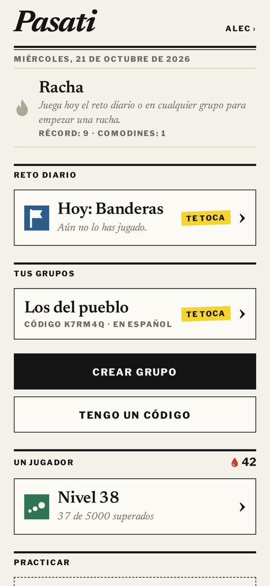
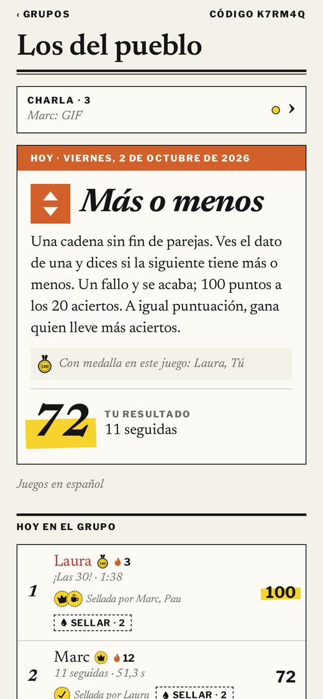
Crea un grupo y pasa el código a tu gente. Desde ese día, todos tenéis el mismo pasatiempo.
Cada semana hay clasificaciónlunes
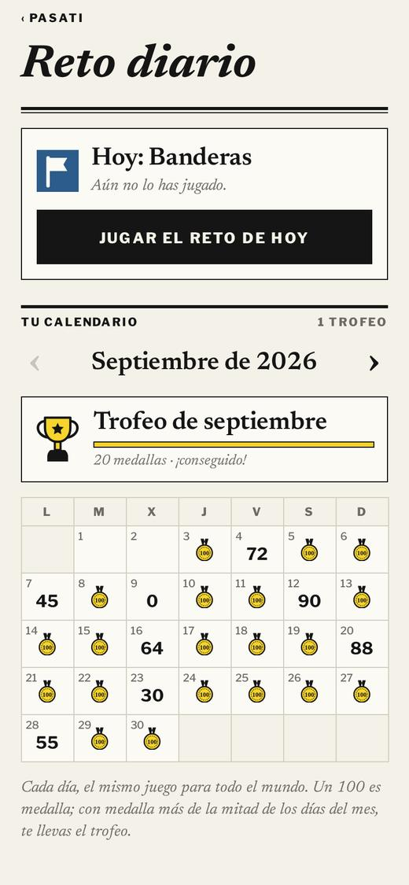
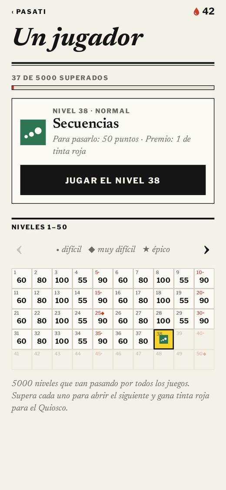
Cada día sale un juego al azar, el mismo para todos. Ves las puntuaciones de los demás en directo, y te avisamos cuando alguien juega o escribe.
Además, cada día hay un juego igual para todo el mundo. Tu calendario guarda cada resultado; con medalla más de la mitad de los días del mes, te llevas el trofeo.
5000 niveles que pasan por todos los juegos, con niveles difíciles cada pocos y tinta roja para sellos en rojo.
Charla con GIFs, para picaros entre partida y partida.
Ponle tu sello a la partida de un amigo que te haya gustado.
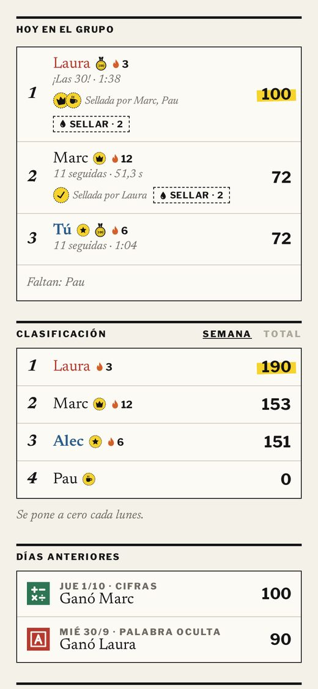
Medallas por cada 100 y una vitrina con las mejores marcas del grupo.
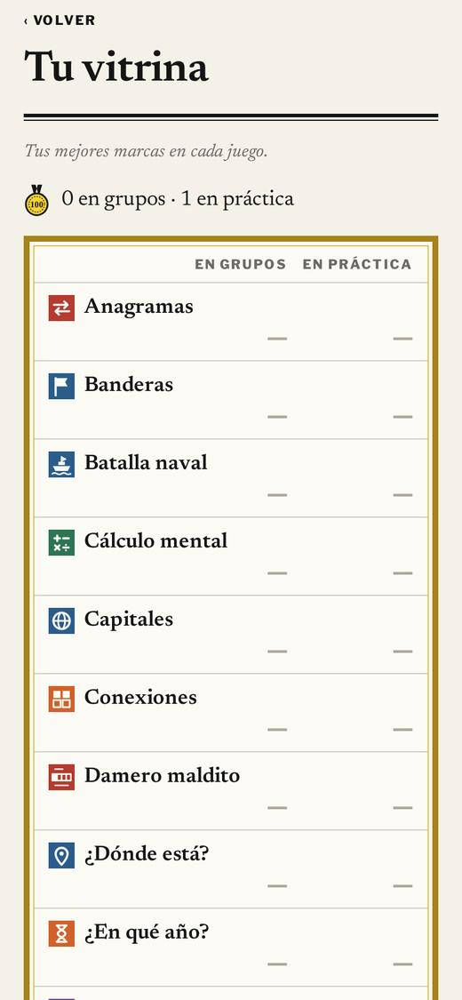
Rachas de días seguidos jugando, con comodín por si un día se te olvida.
Cada partida te da gotas para el Quiosco, donde hay sellos, colores para tu nombre, papel para la app, cabeceras para el grupo y marcos para la vitrina. Todo es estética: nada da ventaja.
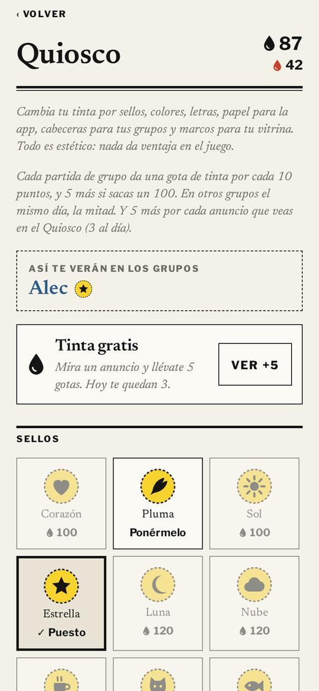
Toca uno para ver cómo se juega.
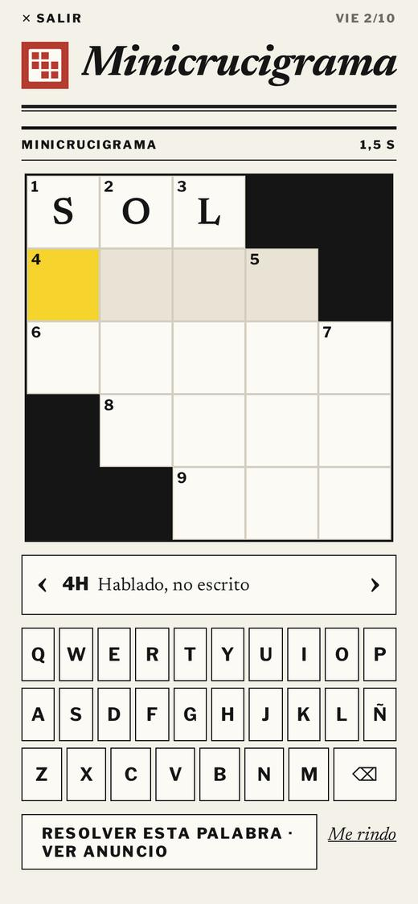
Un crucigrama de 5×5. Toca una casilla para escribir; tócala otra vez para cambiar entre horizontal y vertical. 100 puntos si lo acabas en 1 minuto o menos.
Al crearlo te damos un código de seis letras para pasárselo a tu gente.
Grupo nuevo
Idioma de los juegos
Todo el grupo juega con las mismas palabras y preguntas, en este idioma.
Crear grupo en la appToday’s puzzles
A different puzzle every day to play with your friends: mini crosswords, acrostics, battleships, maps, flags, word games and more than twenty others. Everyone in the group gets the same challenge, one game a day, and there’s a weekly leaderboard.
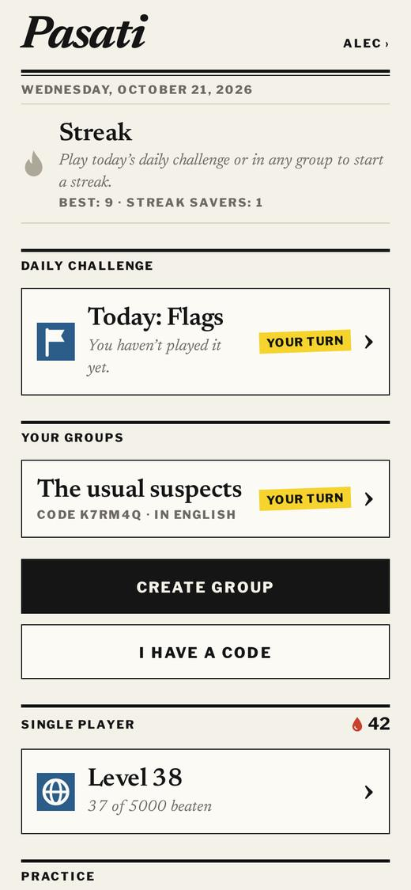
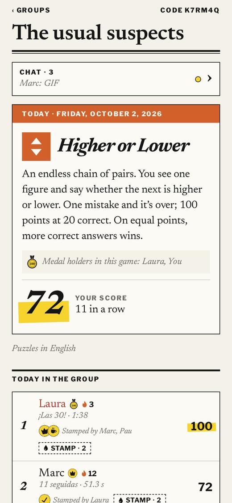
Create a group and share the code with your people. From that day on, you all get the same puzzle.
A new leaderboard every weekMonday
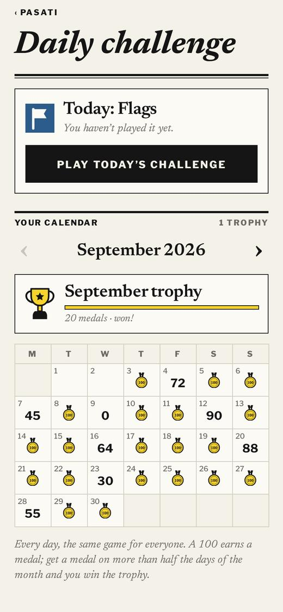
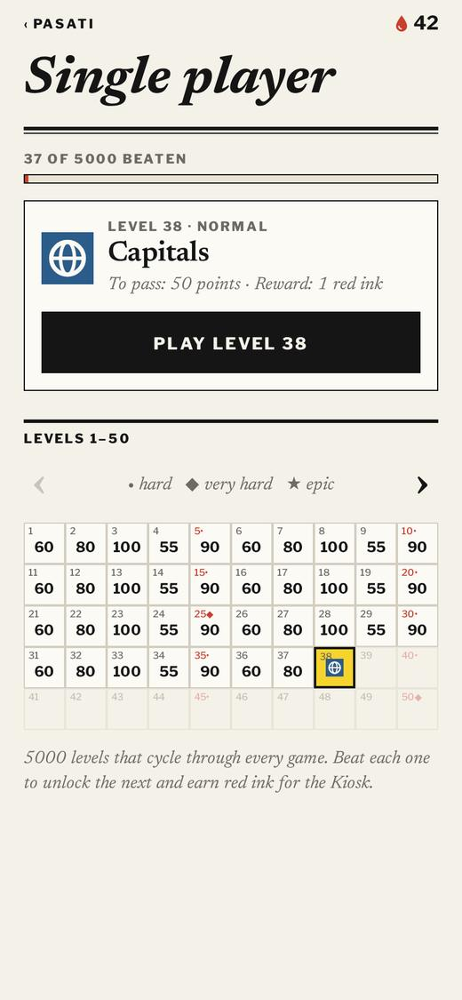
Every day a random game comes up, the same for everyone. See everyone’s scores live, and get notified when someone plays or writes.
On top of that, every day there’s one game that’s the same for everyone. Your calendar keeps every result; get a medal on more than half the days of a month and you win its trophy.
5000 levels that run through every game, with hard ones every few levels and red ink for red stamps.
Chat with GIFs, for some banter between games.
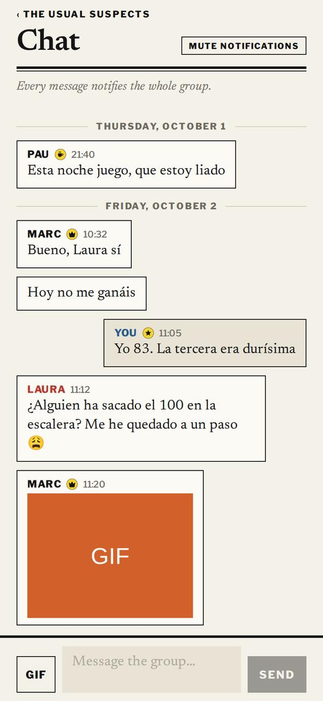
Put your stamp on a friend’s game you liked.
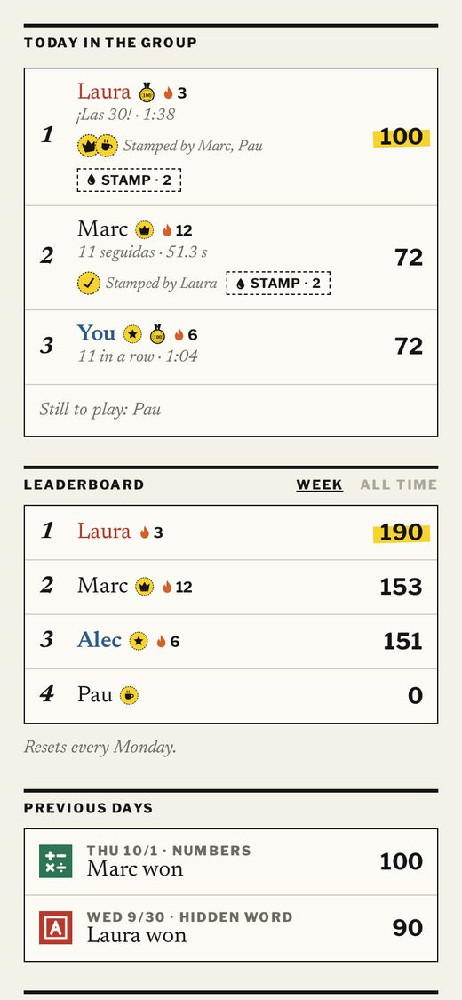
Medals for every 100 and a trophy case with the group’s best scores.
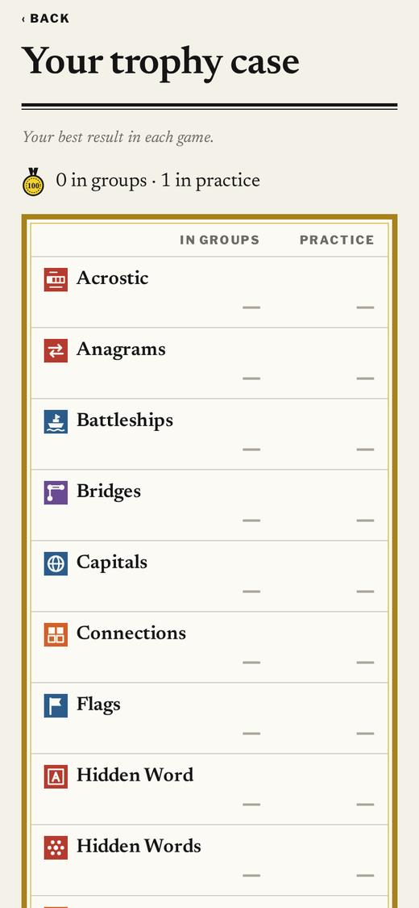
Streaks of days in a row, with a saver in case you forget one day.
Every game gives you drops for the Kiosk, with stamps, name colours, app paper, group mastheads and trophy-case frames. It’s all looks: nothing gives an edge.
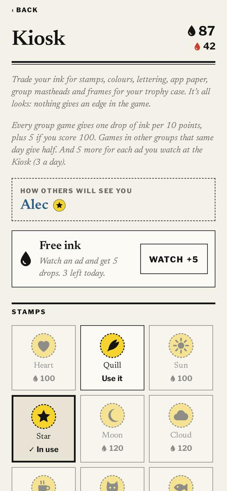
Tap one to see how it’s played.
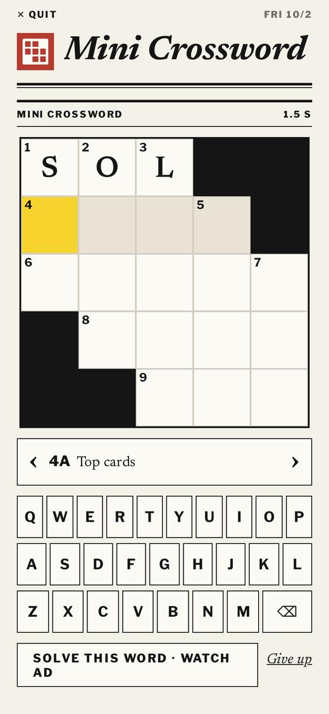
A 5×5 crossword. Tap a square to type; tap it again to switch between across and down. 100 points if you finish in 1 minute or less.
Groups in Spanish also get a Spain-specific game (towns on the map).
You’ll get a six-letter code to send to your friends.
New group
Puzzle language
Everyone in the group plays the same words and questions, in this language.
Create the group in the app